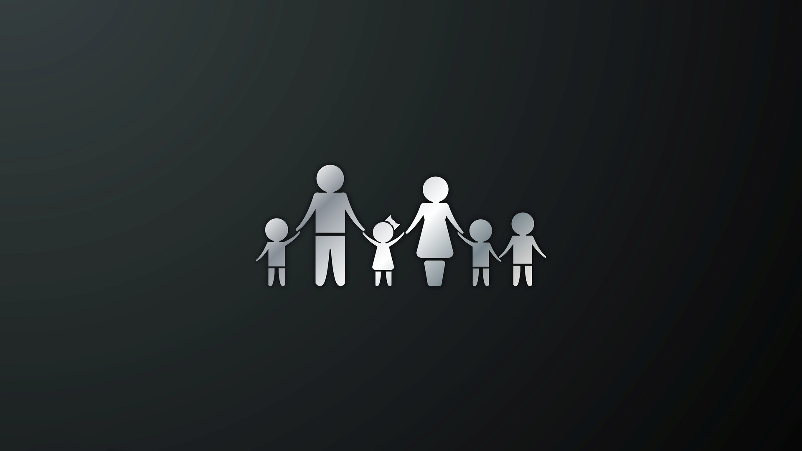

Something interesting about me is I'm really attached to my family. I'm usually always spending time with my family and I always enjoy their company and tips on moving forward in life. At times, my parents teach me how to cook, clean, wash clothes and dishes, and to be organized with my stuff. I consider my family as something very valuable to me and usually how i spend the majority of my time with.
Another interesting thing about me is I'm a very honest and positive person with no bad intentions at all. This type of thinking that i have makes me want to help people at all times. I don't like to be selfish because everyone needs help once in their lives. And i know there are people out there in the world that needs more help than others. I enjoy helping others because it makes me feel joy that I'm able to at least give a small solution to a problem that at first they didnt believe there was no hope. I believe there is always hope and a solution to anything with the right people and right motives.

A third thing that is interesting about me is I enjoy playing many Mario and Pokemon games. Growing up I really enjoy having fun playing Mario with my cousin and enjoy the games that i enjoy back then. Pokemon I've played for many years and have played many generations of the game. While I've stopped playing pokemon, I always will have both of these games in my heart as they transformed me into who i am today with the fun and excitement of these games.